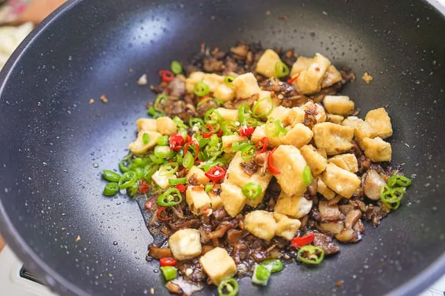

Tofu Sisig

Tofu Sisig or Tokwa Sisig is a Kapampangan sisig dish that contains deep fried tofu with mayo and spice dressing.
Ingredients
- Firm or Extra Firm Tofu
- 2 pcs bell pepper
- 1 pcs. long pepper
- 1 pcs. onion
- Butter
- Cooking Oil
- 1 Cup Calamansi Juice
- 1 Cup liverspread
- 1 Cup Soy Sauce
- Mayonnaise
- Ground Black pepper
Procedures
- In a bowl combine Mayonnaise, soy sauce, calamansi juice and black pepper.
- Add Liver spread, and Stir until well blended. Set aside.
- Heat cooking oil in a pan over mediun heat. Deep fry tofu until golden brown.
- Remove the tofu from the pan and place on a plate with paper towels to remove excess oil.
- Leave atleast 1 tbsp. of oil in the pan and add butter. After the butter melts, add the chopped onion, bell peppers, and green chilli peppers. Cook until the veggies softens.
- Transfer all the Ingredients in a mixing bowl and mix well. Add extra raw onions for texture.
- Heat a sizzling plate, add butter, and add the sisig mixture when the butter melts. We can also serve the sisig on a plate.